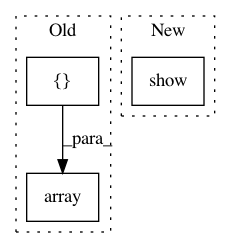

2ba53cdca52876757f6c066c58e437b8b6a067ab,SpeechModel.py,ModelSpeech,RecognizeSpeech,#ModelSpeech#Any#Any#,209
Before Change
data_input = np.array([data_input], dtype=np.int16)
labels_num = np.array([labels_num], dtype=np.int16)
input_length = np.array([[data_input.shape[0] // 4 - 3]], dtype=np.int16)
label_length = np.array([[64]], dtype=np.int16)
x=[data_input, labels_num, input_length, label_length]
After Change
import matplotlib.pyplot as plt
plt.subplot(111)
plt.imshow(data_input.T, cmap=plt.get_cmap("gray"))
plt.show()
while(len(data_input)<1600): //长度不够时补全到1600
data_input = np.row_stack((data_input,arr_zero))
//print(len(data_input))
In pattern: SUPERPATTERN
Frequency: 3
Non-data size: 3
Instances
Project Name: nl8590687/ASRT_SpeechRecognition
Commit Name: 2ba53cdca52876757f6c066c58e437b8b6a067ab
Time: 2018-04-04
Author: 3210346136@qq.com
File Name: SpeechModel.py
Class Name: ModelSpeech
Method Name: RecognizeSpeech
Project Name: raghakot/keras-vis
Commit Name: 5ee8d4a1719a4c1070924351af9c2119432e7066
Time: 2017-04-29
Author: ragha@outlook.com
File Name: examples/attention_maps.py
Class Name:
Method Name: generate_saliceny_map
Project Name: raghakot/keras-vis
Commit Name: 5ee8d4a1719a4c1070924351af9c2119432e7066
Time: 2017-04-29
Author: ragha@outlook.com
File Name: examples/attention_maps.py
Class Name:
Method Name: generate_cam